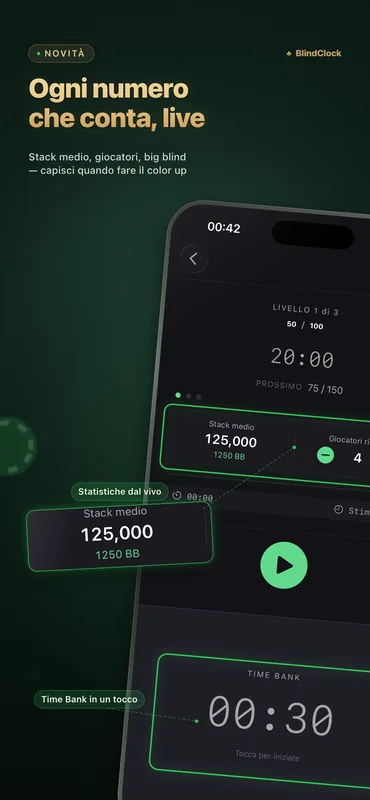
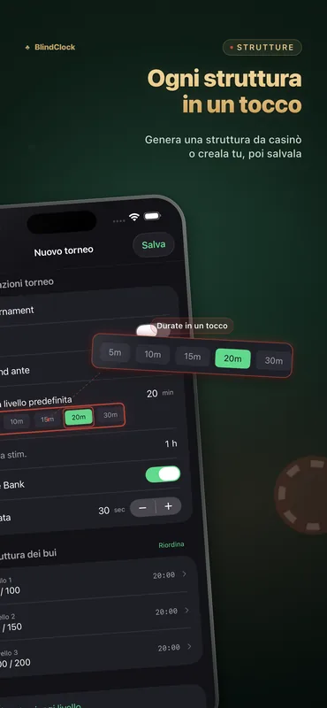
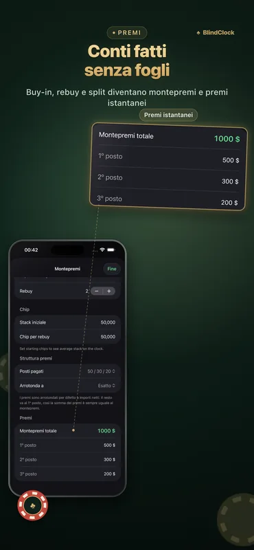

Tutto ciò che serve a un host
Pensato per le partite casalinghe e i tornei da club: preciso anche a schermo spento, leggibile da tutto il tavolo.
Timer da torneo preciso
Metti in pausa, riprendi o salta i livelli. Il timer resta preciso in background e sopravvive a una chiusura forzata: riparti esattamente da dove avevi lasciato.
Generatore di struttura dei bui
Indica numero di giocatori, chip e durata desiderata: ottieni una struttura ordinata in stile casinò, con pause incluse, in un tap.
Calcolatore dei payout
Buy-in, rebuy e suddivisione del montepremi calcolati al volo: a fine serata fai i conti senza un foglio di calcolo.
Time bank
Concedi ai giocatori tempo extra per decidere con time bank configurabili, completi di avvisi e suoni.
Live Activity & Dynamic Island
Il livello in corso resta sulla schermata di blocco e nella Dynamic Island. Su un iPhone in carica, StandBy lo trasforma in un timer da torneo a tutto schermo.
Modalità tavolo su iPad
Ruota un iPad in orizzontale per un conto alla rovescia gigante con i bui ai lati: tutto il tavolo lo legge a colpo d’occhio e lo schermo resta sempre acceso.
Condivisione dei modelli
Esporta qualsiasi torneo come file .blindclock e invialo a un amico via AirDrop: importa la tua struttura identica in un tap.
Sincronizzazione iCloud
I tuoi modelli di torneo ti seguono automaticamente tra iPhone e iPad: gratis per tutti.
L’app in azione



Esempi di strutture dei bui
Ecco una struttura fatta bene: un turbo si chiude in circa 1,5 ore, un torneo casalingo standard in circa 3, un deep stack in 4,5 o più. Il generatore di BlindClock ne costruisce una per il tuo esatto numero di giocatori, chip e durata desiderata, in un tap.
| Livello | Turbo · 15 min | Standard · 20 min | Deep · 30 min |
|---|---|---|---|
| 1 | 25 / 50 | 25 / 50 | 25 / 50 |
| 2 | 50 / 100 | 50 / 100 | 50 / 100 |
| 3 | 100 / 200 | 75 / 150 | 75 / 150 |
| 4 | 200 / 400 | 100 / 200 | 100 / 200 |
| 5 | 300 / 600 | 150 / 300 | 150 / 300 |
| 6 | 500 / 1000 | 200 / 400 | 200 / 400 |
| 7 | — | 300 / 600 | 250 / 500 |
| 8 | — | 400 / 800 | 300 / 600 |
| 9 | — | 500 / 1000 | 400 / 800 |
| Stack iniziale | 5,000 | 5,000 | 10,000 |
I bui sono indicati come small blind / big blind. Aggiungi una pausa di 10 minuti ogni quattro o cinque livelli — il generatore di BlindClock le inserisce automaticamente.
Guida completa (in inglese): come organizzare un torneo di poker in casa →
Novità della 2.1
- Statistiche del tavolo dal vivo — lo stack medio, i giocatori rimasti e lo stack medio in big blind, aggiornati a ogni livello — direttamente sull’orologio.
- Capisci quando fare il color up — il numero che gli organizzatori seri tengono d’occhio: quando fare il color up, quando parlare di un deal, a che ritmo va davvero il torneo. Tocca per eliminare un giocatore. Gratis per tutti.
- Avvio più rapido e rifiniture — una schermata di avvio rinnovata e rifiniture in tutta l’app.
BlindClock Pro
La versione gratuita è pienamente giocabile: timer, Live Activity, generatore, payout, sincronizzazione e fino a 5 tornei personalizzati. Pro rimuove il limite con un solo acquisto, per sempre, su tutti i tuoi dispositivi.
- Tornei personalizzati illimitati
- Acquisto una tantum
- Niente pubblicità, niente abbonamento
- Tutti i tuoi dispositivi